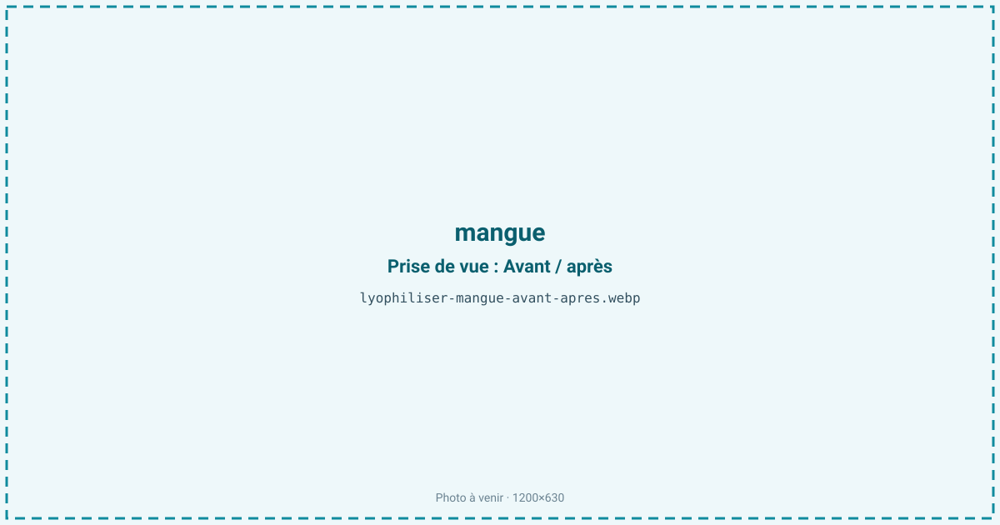
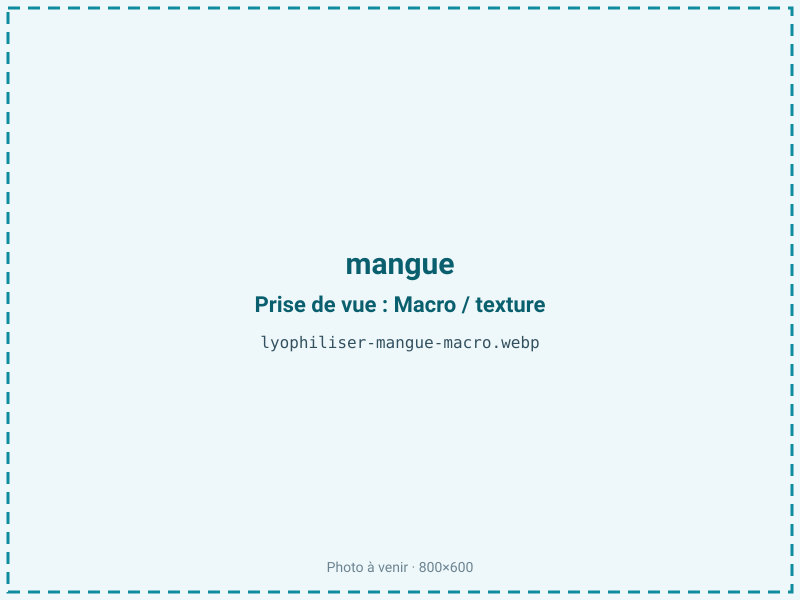
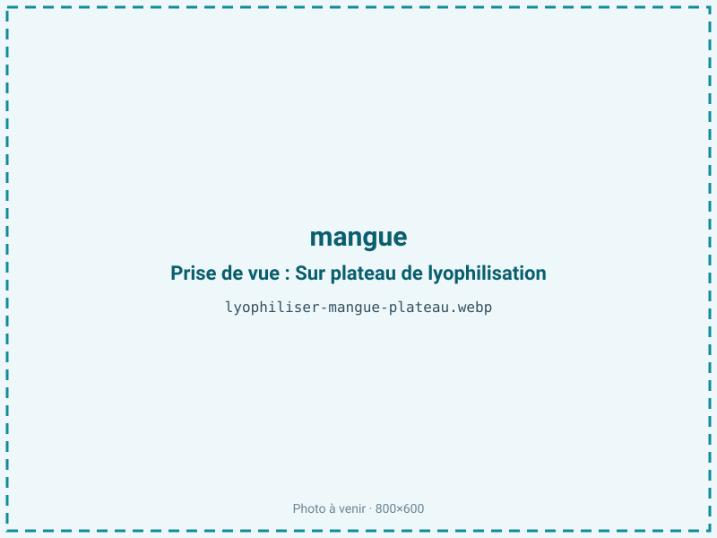
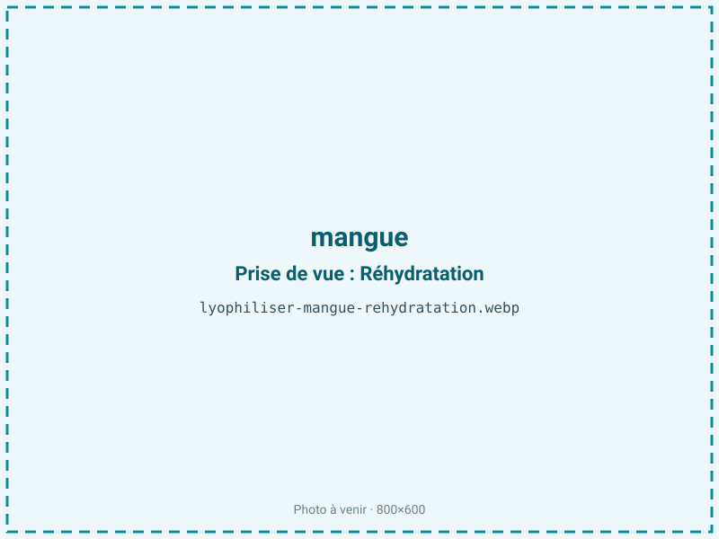

Lyophiliser des mangues
La mangue mûre est très sucrée et fragile : sa chair noircit et fermente en quelques jours. La lyophilisation la transforme en dés fondants ou en poudre orangée qui concentrent le sucre et les lactones tropicales, sans cuisson ni ajout, pour un ingrédient stable douze mois et plus.

En bref
Comment mangue se comporte à la lyophilisation
La chair de mangue contient environ 83 % d'eau et 12 à 15 % de sucres (saccharose dominant, avec fructose et glucose), une teneur parmi les plus élevées des fruits courants. Sa couleur vient des caroténoïdes (bêta-carotène, violaxanthine), liposolubles et donc peu lessivés, et son arôme repose sur des lactones et des esters très volatils. À la congélation, l'eau cristallise dans un parenchyme tendre et peu fibreux ; à la sublimation, il laisse une structure poreuse qui donne un morceau fondant plutôt que franchement croquant.
Le point critique est la richesse en sucres : leur température de transition vitreuse est basse, si bien qu'une clayette qui monte trop vite en primaire provoque un affaissement (collapse) — le morceau se tasse, devient collant et translucide. Le front de sublimation progresse lentement dans les tranches épaisses car la matrice sucrée retient l'eau. Les caroténoïdes, eux, traversent bien le procédé et la couleur orangée reste vive.
Paramètres de cycle
Trancher en lamelles régulières de 6 à 10 mm après avoir retiré le noyau et la peau ; au-delà, le cœur sucré reste humide et poisseux. Congeler à −30 voire −35 °C pour figer les sucres avant qu'ils ne migrent.
En sublimation primaire, monter la clayette lentement et rester modéré tant que le front n'a pas traversé, pour éviter le collapse propre aux fruits très sucrés, puis enchaîner sur un secondaire pour descendre l'aw. La mangue étant un produit maigre sans lipides à protéger, on vise une aw basse de 0,20 à 0,30 : descendre est ici favorable à la stabilité et limite le poisseux. Critère d'arrêt : un morceau qui ne colle plus, sec au toucher, et une aw mesurée inférieure ou égale à 0,30.
Pièges connus
- Très sucrée : risque de collapse, cycle maîtrisé.
- Trancher en épaisseur régulière.



Variantes & provenance
La variété change tout : une Kent ou une Keitt, charnues et peu fibreuses, se prêtent mieux à la tranche qu'une Amélie filandreuse. La maturité est décisive — une mangue à point (chair souple, sucre élevé) collapse plus facilement qu'une mangue juste mûre, mais offre un arôme bien plus riche ; une mangue verte reste acide et manque de lactones. La provenance (Pérou, Côte d'Ivoire, Brésil) et la saison modulent le degré Brix de départ, donc le risque d'affaissement et la durée du cycle. En dés, en tranches ou en poudre, le procédé s'ajuste, la poudre étant la forme la plus hygroscopique.
Conservation & DLUO
La mangue est un produit maigre : son facteur limitant n'est pas l'oxydation des graisses mais la reprise d'humidité, amplifiée par la forte teneur en sucres hygroscopiques qui captent l'eau de l'air. Une aw basse lui est donc favorable, sans le risque de rancissement propre aux produits gras. À l'air libre, un morceau redevient souple et collant en quelques minutes ; en poudre, il s'agglomère. Il faut refermer vite et conditionner en sachet barrière. Comptez 12 à 24 mois en sachet barrière à température ambiante, à l'abri de la lumière qui, à la marge, ternit les caroténoïdes. Un absorbeur d'humidité sécurise les formats poudre.
12 à 24 mois en sachet barrière.
Estimez selon votre emballage :
Face aux autres procédés de séchage
Au séchage à l'air chaud, la mangue caramélise, brunit et durcit en une pâte dense de type « cuir de fruit » : le sucre concentré prend une note cuite et les lactones s'évaporent. Le micro-ondes sous vide sèche plus vite mais préserve moins bien l'arôme tropical volatil et donne une texture moins aérée. La lyophilisation conserve la couleur orangée, le profil aromatique et une texture fondante — c'est pourquoi elle domine le marché du dé de mangue premium pour l'inclusion. Le surcoût du froid se justifie sur un produit vendu pour son arôme.
Marchés & applications
Dés et tranches pour mueslis, granolas et barres, poudre aromatique et colorante pour yaourts, glaces et boissons, inclusions en chocolaterie et pâtisserie, snack tropical à croquer. Les acheteurs types sont les marques de petit-déjeuner et de snacking sain, les chocolatiers, les glaciers et les fabricants de mélanges de fruits.
- Snack tropical
- Poudre aromatique
- Pâtisserie
Questions fréquentes — mangue
Quel est le ratio de la mangue lyophilisée ?
Environ 7:1 : il faut à peu près 700 g de mangue fraîche épluchée pour 100 g de produit sec.
Pourquoi ma mangue lyophilisée est-elle collante ?
C'est le signe d'un collapse des sucres ou d'une reprise d'humidité : la mangue est très riche en saccharose et hygroscopique. Un cycle mieux maîtrisé et un conditionnement barrière corrigent le problème.
Garde-t-elle sa couleur orange ?
Oui : les caroténoïdes responsables de l'orangé sont liposolubles et résistent bien au froid. La couleur reste vive, surtout à l'abri de la lumière.
Faut-il une mangue bien mûre ?
Une mangue à point donne le meilleur arôme mais collapse plus facilement ; une mangue juste mûre est plus facile à stabiliser. C'est un compromis à arbitrer selon l'usage visé.
Le résultat est-il croquant ?
Plutôt fondant que croquant : la chair peu fibreuse donne un morceau qui fond en bouche, contrairement à la pomme qui craque.
Peut-on la réduire en poudre ?
Oui, mais la poudre de mangue est très hygroscopique et s'agglomère vite : elle exige un conditionnement barrière avec dessiccant.
Faut-il ajouter du sucre ?
Non : la mangue est déjà l'un des fruits les plus sucrés, le procédé ne fait que concentrer ce sucre naturel.
Prochaine étape : envoyez-nous 200 g
Vous avez les repères de la mangue. La suite logique : nous envoyer un échantillon et repartir avec une fiche technique sur votre produit — rendement, aw finale, coût au kilo.
Tester la mangue — 250 à 500 €Déductible de votre premier lot.